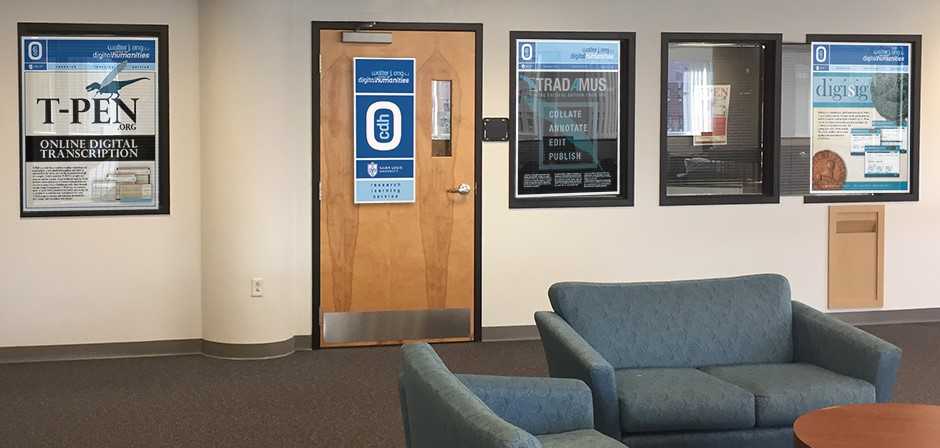

Welcome to the Ong Center
 The Walter J. Ong, S.J., Center for Digital Humanities is an academic unit of Saint Louis University College of Arts and Sciences. We are supported in part by a generous grant from the ICF Foundation in order to further the distinguished legacy of Walter J. Ong, a long-term faculty member at Saint Louis University.
Our Services
The Walter J. Ong, S.J., Center for Digital Humanities collaborates with Saint Louis University faculty and students, scholars at other universities, and local community groups, to develop digital humanities projects.
To book an appointment, please use this form.
Our Mission
The Walter J. Ong, S.J., Center for Digital Humanities advances trans-disciplinary and interdisciplinary, collaborative scholarship by serving as the hub for digital humanities at Saint Louis University.
The center supports the digital humanities research and pedagogy needs of SLU faculty, staff and students by building communities among people who wish to engage with digital methods and tools. Closely integrated with these activities, we develop digital technologies that foster research in the humanities. The center achieves these goals through a variety of outreach efforts and partnerships within and beyond the University community.
- To promote the practice of digital humanities at Saint Louis University
- To assist faculty and students in the design and implementation of their digital humanities research and pedagogy
- To develop innovative software in support of digital humanities research.